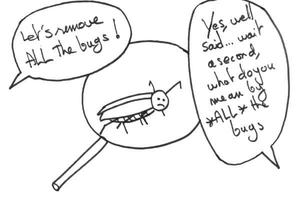

This is the forth and last post of a series about the #ZeroBugs policy. In the previous posts, I detailed how we applied it in our team, what were the consequences and how you could do the same.
There’s a catch though, even if you are sure that #ZeroBugs is a good thing, people around you might not agree ! As with any kind of change, one of the trickiest thing is overcoming people’s fear about your idea. This post will be about dealing with people’s resistance.

A few general change advices
With time, I discovered general best practices to bring change. The first is that you are much more likely to get your ideas through if you are nice with people ! In a bit more details, this means that :
- Try to help people, for real !
- Listen to their concerns instead of pushing your idea
- Don’t blame people if they don’t see the value of your idea
💡 Change agent’s advice #1 : be nice with people
Another invaluable trick is to be patient : change takes time. Finally, if you are stuck, suggest testing your idea for a while, people are more likely to adopt it this way.
Winning the devs over
Back to our particular #ZeroBugs issue. In this particular case, I would try to convince the devs first. Reason A is that without them onboard, the practice won’t work as well as expected. Reason B is that it is more difficult for management to say ‘no’ to a full team than to a single developer.
Developers will fear spending too much time fixing bugs. Sell them long term fixes instead of dirty quick fixes. Stress that it will be a chance to refactor important, poorly designed parts of the system. Also explain that once the bug backlog is clean, they’ll spend more time on new developments.
A last argument for developers is about clarifying prioritization. Pushing bug triage to business people will save devs from feature creep. That should save them from some stress of not delivering.
Winning business people over
They’ll fear that fixing bugs will reduce the delivery of valuable features. Indeed, if done without care, this is a real danger. Highlight the value of bug fixing : it improves the product and image of the company. Fixing bugs also increases feature delivery in the long run. It does so by removing some recurring support issues and fixing technical debt.
Also point out that they’ll have more visibility and control over what is being worked on by the team. This is an opportunity for them to increase the value throughput.
They might also have concerns about the time to spend categorizing bugs. Make sure to get this as streamlined as possible. For example, if they are very busy, you could pre-categorize the issues to make it easier for them.
In this blog post, Andrew Fulton explains how he convinced his boss to adopt a #ZeroBugs policy.
Last words
💡 #ZeroBugs policy makes work more sustainable
I’m done with this series about #ZeroBugs policy. I hope I convinced you to give it a try. The developer’s life is better without bugs ! If you do, or if you already did, I’d love to read about it. Thanks a lot for reading me so far.